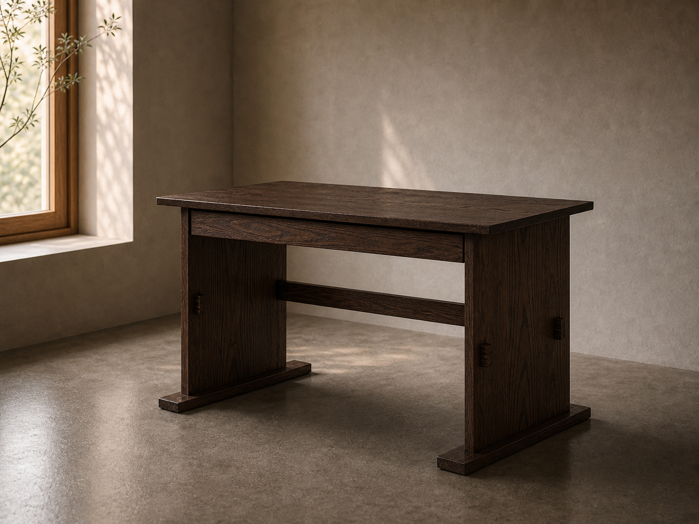

문의 확인
남겨주신 공간, 크기, 수종, 마감, 참고 이미지를 빠른 시일 내에 확인합니다.
Products
바로 상담 가능한 대표 제품과 공간에 맞춰 설계하는 주문제작 제품을 구분해 안내합니다.
목간의 대표 제품은 한국적 목구조의 안정감과 비례를 현대적인 생활 가구로 재해석한 시그니처 디자인입니다. 기본 구조는 유지하되 공간에 맞춰 색상, 크기, 마감 방법을 조정할 수 있습니다.

한국적 구조의 수평과 수직을 현대적인 식탁 비례로 정리한 목간의 시그니처 제품입니다.
자세히 보기
한국적 목구조의 안정감을 작업의 리듬에 맞춰 재해석한 목간의 시그니처 책상입니다.
자세히 보기
시그니처 구조의 언어를 작은 비례로 덜어내어 공간의 곁에 놓이도록 만든 테이블입니다.
자세히 보기기성 규격보다 생활 공간, 동선, 사용 습관에 맞춘 설계가 필요한 경우를 위한 제품군입니다.

Made With You
목간의 주문제작은 완성된 형태를 일방적으로 제안하는 과정이 아닙니다. 공간의 크기, 손이 닿는 높이, 자주 쓰는 물건과 움직임을 함께 확인하며 고객의 필요가 가구의 비율과 구조로 이어지도록 제작합니다.
주문제작 견적 문의남겨주신 공간, 크기, 수종, 마감, 참고 이미지를 빠른 시일 내에 확인합니다.
제작 가능 범위와 예상 견적을 정리하고, 간단한 설계도와 렌더링 이미지를 함께 전달합니다.
가격, 비례, 구조, 디테일에 대한 의견을 여러 차례 나누며 디자인을 다듬습니다.
디자인과 견적이 확정되면 제작 일정에 맞춰 목재 준비와 본 제작을 시작합니다.
식탁, 책상, 사이드 테이블에 한정하지 않고 공간에 필요한 다양한 가구의 구조와 비례, 쓰임을 함께 설계합니다.
놓일 자리의 크기, 주변 가구와의 높이, 생활 동선을 확인해 자연스럽게 놓이는 치수를 찾아갑니다.
사용 환경과 원하는 분위기에 맞춰 목재의 수종, 색감, 도장 방향, 마감 촉감을 함께 검토합니다.
수납, 배선, 모서리 처리, 하중, 관리 방식까지 고려해 오래 쓰기 편한 가구로 구체화합니다.